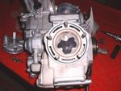
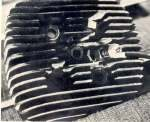

Several joints sit high on the engine: the valve inspection caps or head cover gasket, the head gasket (between head and cylinder), the base gasket (between cylinder and crankcase), and on pushrod engines (such as the K-Light 125) the O-rings round the pushrod and oil passages between cylinder and head. Oil from any of these runs down the fins and drips from the lowest point. Overheating, uneven head nut tightening, and age are common causes. Leaking valve caps are cheap; head and base gaskets mean taking the top end apart.
Is it safe to ride?
Yes with care for a seep. Stop if oil drips onto the exhaust (fire and smoke risk), the level falls fast, or there is a hiss of gas at the head joint.
Quick checks first
- Oil level correct?
- Are the valve inspection caps tight, and their O-rings present?
- Is the oil coming from the top cover or lower down?
- Has the engine overheated recently?
Diagnose it step by step
1Clean the cylinder and head and trace with powder using Trace an oil leak. Is the highest wet point at a valve cap or the head cover?
- Yes: refit the cap with a new O-ring, or the cover with a new gasket. Check valve clearance while it is open with Check and adjust valve clearance. Retest.
- No: go to step 2.
2Is it at the head gasket (the joint just below the head fins)?
- Yes: go to step 3.
- At the base gasket (between cylinder and crankcase): go to step 4.
3Is there also a hiss, soot at the joint, or low compression?
- Yes: combustion gas is escaping too. Test with Test engine compression and go to Assess the top end (cylinder, piston, valves). The head should be checked for flatness.
- No, oil only: on pushrod engines it can be an O-ring at an oil or pushrod passage. Workshop: head nuts must be checked and tightened only in the manual sequence and torque. Do not tighten head nuts at random; you can warp the head or pull a stud.
4Is the oil level too high or the breather blocked?
- Yes: fix it with Check the engine oil level and Check the crankcase breather, then clean and recheck.
- No: the base gasket has failed. Workshop job: Assess the top end (cylinder, piston, valves).
What happens if you ignore it: oil on hot fins smokes and can catch fire on the exhaust; a head gasket leak can burn the head face and lose compression.
Causes, most likely first
| Cause | How to confirm | Fix |
|---|---|---|
| Valve cap O-ring or head cover gasket | Wet at top | Replace O-ring or gasket |
| Overfilling or blocked breather | Level and hose | Check the crankcase breather |
| Head gasket | Wet below head, soot, low compression | Assess the top end (cylinder, piston, valves) |
| Base gasket | Wet at crankcase joint | Assess the top end (cylinder, piston, valves) |
| Warped head after overheating | Workshop flatness check | Assess the top end (cylinder, piston, valves) |
Reference values (K-Light 125)
| Item | Value | PDF page |
|---|---|---|
| Cylinder head cover bolt | 9.8 to 11 N·m | 194 |
| Cylinder head flatness limit (workshop) | 0.05 mm | 202 |